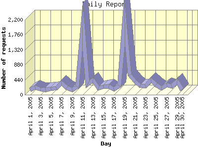

Report generated by Analog 6.0 and Report Magic 2.21
|
Web Server Statistics for "Harish Narayanan (hnarayan) - April 2005" Report generated by Analog 6.0 and Report Magic 2.21 |
The Daily Report identifies the activity for each day within the reporting period. Remember that one page hit can result in several server requests as the images for each page are loaded.

| Day | Number of requests | Number of bytes transferred | Percentage of the bytes | Percentage of the requests | |
|---|---|---|---|---|---|
| 1. | April 1, 2005 | 143 | 7.590 MB | 2.25% | 1.25% |
| 2. | April 2, 2005 | 212 | 7.278 MB | 2.15% | 1.86% |
| 3. | April 3, 2005 | 158 | 2.603 MB | 0.77% | 1.39% |
| 4. | April 4, 2005 | 146 | 5.437 MB | 1.61% | 1.28% |
| 5. | April 5, 2005 | 178 | 13.806 MB | 4.09% | 1.56% |
| 6. | April 6, 2005 | 190 | 12.101 MB | 3.58% | 1.67% |
| 7. | April 7, 2005 | 341 | 11.010 MB | 3.26% | 2.99% |
| 8. | April 8, 2005 | 196 | 13.574 MB | 4.02% | 1.72% |
| 9. | April 9, 2005 | 146 | 10.717 MB | 3.17% | 1.28% |
| 10. | April 10, 2005 | 234 | 5.128 MB | 1.52% | 2.05% |
| 11. | April 11, 2005 | 2,031 | 14.592 MB | 4.32% | 17.82% |
| 12. | April 12, 2005 | 298 | 11.792 MB | 3.49% | 2.62% |
| 13. | April 13, 2005 | 433 | 7.030 MB | 2.08% | 3.80% |
| 14. | April 14, 2005 | 183 | 11.524 MB | 3.41% | 1.61% |
| 15. | April 15, 2005 | 229 | 4.922 MB | 1.46% | 2.01% |
| 16. | April 16, 2005 | 251 | 11.223 MB | 3.32% | 2.20% |
| 17. | April 17, 2005 | 165 | 5.521 MB | 1.64% | 1.45% |
| 18. | April 18, 2005 | 254 | 10.889 MB | 3.22% | 2.23% |
| 19. | April 19, 2005 | 2,145 | 22.348 MB | 6.62% | 18.82% |
| 20. | April 20, 2005 | 581 | 14.276 MB | 4.23% | 5.10% |
| 21. | April 21, 2005 | 397 | 21.897 MB | 6.48% | 3.48% |
| 22. | April 22, 2005 | 255 | 9.819 MB | 2.91% | 2.24% |
| 23. | April 23, 2005 | 264 | 12.385 MB | 3.67% | 2.32% |
| 24. | April 24, 2005 | 433 | 12.354 MB | 3.66% | 3.80% |
| 25. | April 25, 2005 | 284 | 19.379 MB | 5.74% | 2.49% |
| 26. | April 26, 2005 | 183 | 6.274 MB | 1.86% | 1.61% |
| 27. | April 27, 2005 | 285 | 15.615 MB | 4.62% | 2.50% |
| 28. | April 28, 2005 | 250 | 10.053 MB | 2.98% | 2.19% |
| 29. | April 29, 2005 | 386 | 24.232 MB | 7.17% | 3.39% |
| 30. | April 30, 2005 | 144 | 2.427 MB | 0.72% | 1.26% |
Most active day April 11, 2005 : 684 pages sent. 2,145 requests handled. 23,433,411.00 served.
Daily average: 379 requests handled. 11.260 MB served.
This report was generated on May 10, 2005 18:43.
Report time frame April 1, 2005 00:36 to April 30, 2005 23:55.
| Web statistics report produced by: | |
 Analog 6.0 Analog 6.0 |  Report Magic 2.21 Report Magic 2.21 |